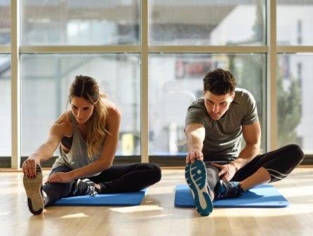

10 фактов о пользе стретчинга
Стретчинг – это не только возможность сесть на продольный и поперечный шпагат. Такие занятия помогут разработать суставы и увеличить амплитуду их движения. Впрочем, это далеко не все, для чего нужна растяжка мышц. Занимаясь по такой программе, женщина может наладить работу репродуктивной системы и даже подготовиться к родам.
Защита от травм
Малая эластичность сухожилий и связок – это основная причина спортивных и бытовых травм (переломов, ушибов, разрывов, вывихов). Польза стретчинга состоит в том, что с его помощью можно существенно снизить риск травмирования. А это особенно актуально для людей преклонного возраста.
Повышение тонуса
Чтобы понять, для чего нужна растяжка, достаточно посетить хотя бы одно занятие. Упражнения, которые входят в комплекс, содействуют развитию выносливости, работоспособности и повышению тонуса. При этом вам не стоит опасаться большой нагрузки на сердечно-сосудистую систему, что больше характерно для силового тренинга.
{kind=link}
Красивая осанка
Если вы постоянно сутулитесь и не можете ровно держать спину, вам показан стретчинг. Упражнения помогут:
- снизить болевые ощущения в области позвоночника (независимо от локализации);
- избавиться от зажимов;
- исправить осанку.
Похудение
Если вы не понимаете, чем полезна растяжка при похудении, вам следует сделать несколько несложных упражнений и понаблюдать за реакцией организма. Не исключено, что на следующий день у вас появится небольшая крепатура и боль в мышцах. Более того, за 50 минут динамичного тренинга вы можете сжечь до 200 калл.
Увеличение амплитуды
Тренировки способствуют укреплению суставов и повышают их мобильность. Более того, они благотворно влияют на связки и сухожилия. За счет этого увеличивается амплитуда движения, и улучшается качество жизни. Но у растяжки есть как плюсы, так и минусы. Такие занятия противопоказаны при травмах конечностей: в этом случае реабилитация осуществляется посредством ЛФК.